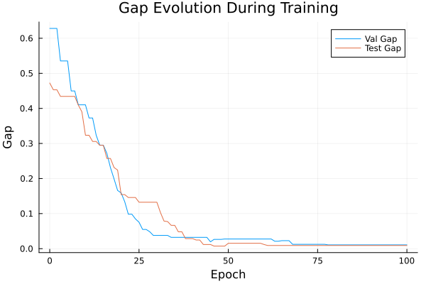
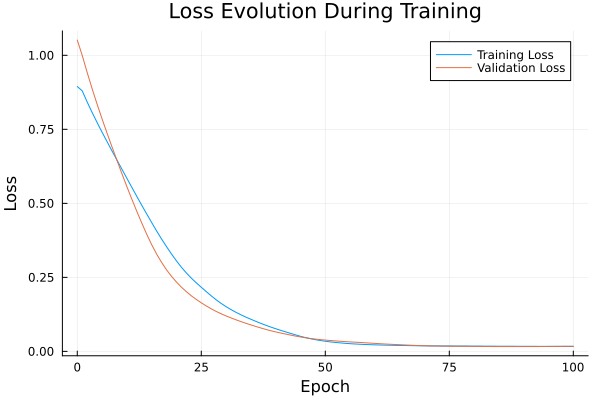

Basic Tutorial: Training with FYL on Argmax Benchmark
This tutorial demonstrates the basic workflow for training a policy using the Perturbed Fenchel-Young Loss algorithm.
Setup
using DecisionFocusedLearningAlgorithms
using DecisionFocusedLearningBenchmarks
using MLUtils: splitobs
using PlotsCreate Benchmark and Data
b = ArgmaxBenchmark()
dataset = generate_dataset(b, 100)
train_data, val_data, test_data = splitobs(dataset; at=(0.3, 0.3, 0.4))(DecisionFocusedLearningBenchmarks.Utils.DataSample{@NamedTuple{}, @NamedTuple{}, Matrix{Float32}, Vector{Float32}, Vector{Float32}}[DataSample(x=Float32[-1.19868 -1.59856 … 0.05303 -1.40541; 0.303637 0.45455 … -1.06643 -0.441211; … ; -3.98412 -0.0813016 … -0.0114543 -0.977307; 1.1696 0.153677 … -2.5887 -0.3435], θ=Float32[4.69549, -0.208754, 2.38729, 2.13249, 0.186458, -0.916067, 2.26861, 0.0353086, 0.416408, 2.25589], y=Float32[1.0, 0.0, 0.0, 0.0, 0.0, 0.0, 0.0, 0.0, 0.0, 0.0]), DataSample(x=Float32[1.31064 0.841934 … -0.920915 -1.8981; 0.782157 -0.878421 … -1.0309 1.50362; … ; -0.259433 1.08736 … -0.876227 -0.354058; -0.436872 -0.855996 … 0.810539 -0.30187], θ=Float32[-1.45025, -1.45426, 0.30351, -0.587219, 1.9814, -0.438497, 0.717542, 1.74732, 2.78981, 0.20782], y=Float32[0.0, 0.0, 0.0, 0.0, 0.0, 0.0, 0.0, 0.0, 1.0, 0.0]), DataSample(x=Float32[-0.755836 -0.342514 … 0.717228 -0.334874; -0.755055 -0.92259 … 1.31569 0.164084; … ; 1.38704 -0.251015 … 1.68348 1.33346; -0.0396811 -1.44366 … 0.281063 -0.30642], θ=Float32[0.130422, 0.717632, 2.51337, 1.63703, -1.1941, -0.5147, -1.46276, -0.22039, -3.30385, -1.50788], y=Float32[0.0, 0.0, 1.0, 0.0, 0.0, 0.0, 0.0, 0.0, 0.0, 0.0]), DataSample(x=Float32[-0.233471 -1.35798 … -0.963436 0.910856; 0.440981 0.339734 … -1.11518 -1.65788; … ; 0.373186 0.57773 … -0.959 -0.644932; -0.173506 1.43397 … 0.37668 0.516184], θ=Float32[-0.315862, -0.139596, -1.78776, 0.177122, -0.867302, -1.64503, 0.200766, 0.23581, 2.38973, 2.03003], y=Float32[0.0, 0.0, 0.0, 0.0, 0.0, 0.0, 0.0, 0.0, 1.0, 0.0]), DataSample(x=Float32[-0.99311 0.261506 … 0.84387 0.428734; 0.703012 0.173136 … -0.570939 -1.21121; … ; -0.92047 -0.363332 … -1.33794 -1.57975; -1.79623 -0.212116 … 2.74206 -0.745117], θ=Float32[0.482148, -0.386662, 2.80031, -0.388941, -1.74828, 0.563646, -1.62203, 2.29256, 1.8839, 2.36902], y=Float32[0.0, 0.0, 1.0, 0.0, 0.0, 0.0, 0.0, 0.0, 0.0, 0.0]), DataSample(x=Float32[1.10337 0.466151 … -0.114663 0.00927783; 0.0152743 -0.207672 … 0.333901 0.0124565; … ; 0.0560843 -0.702407 … -1.30747 -0.907355; -0.268459 -0.108237 … -0.530755 -0.777812], θ=Float32[-0.584331, 1.27179, 0.667488, -3.01055, -1.67346, 0.360388, -2.24443, -1.02333, 1.2366, 1.13823], y=Float32[0.0, 1.0, 0.0, 0.0, 0.0, 0.0, 0.0, 0.0, 0.0, 0.0]), DataSample(x=Float32[-0.281799 1.17524 … 1.03993 -0.358389; -2.04007 -1.12061 … -0.453561 0.0122522; … ; 0.57183 0.123516 … 1.28866 -0.326802; -1.13098 1.44737 … -0.179657 -1.40121], θ=Float32[1.375, 0.729896, -0.272492, 2.02202, -2.75713, -0.297499, -0.217879, 0.730731, -1.08019, 0.224433], y=Float32[0.0, 0.0, 0.0, 1.0, 0.0, 0.0, 0.0, 0.0, 0.0, 0.0]), DataSample(x=Float32[-0.261643 -0.579893 … -1.3947 -1.09632; 1.01181 -1.33699 … -0.210023 0.480395; … ; -0.472792 0.109888 … -0.41682 -0.500633; 0.472287 -0.164646 … 0.815457 -0.389818], θ=Float32[-0.160931, 1.52055, -0.61136, 1.41587, -0.175596, -1.43189, -1.92279, -0.993386, 1.85914, 0.721095], y=Float32[0.0, 0.0, 0.0, 0.0, 0.0, 0.0, 0.0, 0.0, 1.0, 0.0]), DataSample(x=Float32[0.543195 -1.2291 … -0.622886 -0.315364; -1.00632 -0.801654 … 0.648947 -0.677222; … ; -0.505359 -1.19213 … 0.623884 -0.0389114; 1.36573 0.724338 … 1.39314 0.643131], θ=Float32[1.33946, 2.82883, 3.71446, 4.21669, -1.75966, -1.06418, -0.234064, 3.10678, -0.71664, 1.51261], y=Float32[0.0, 0.0, 0.0, 1.0, 0.0, 0.0, 0.0, 0.0, 0.0, 0.0]), DataSample(x=Float32[-0.182558 0.183995 … 0.686946 -1.66399; -0.303513 0.231389 … 2.52544 -0.615754; … ; 0.363701 0.370093 … -0.898591 0.287577; -0.16654 -1.98309 … 1.11782 0.326298], θ=Float32[-0.106366, -1.34283, 2.60486, 0.188329, 1.26025, 0.0622439, -0.560053, 0.469883, -1.99167, 0.835238], y=Float32[0.0, 0.0, 1.0, 0.0, 0.0, 0.0, 0.0, 0.0, 0.0, 0.0]) … DataSample(x=Float32[0.734184 0.103098 … -0.45392 -1.44769; -0.511488 -1.35819 … 0.576712 0.00152409; … ; -2.29817 -1.49506 … -1.7795 -0.953601; 2.76847 -0.0872422 … 1.3026 0.0987994], θ=Float32[2.88027, 2.289, 1.47469, -1.37807, 1.44948, -0.0925612, -0.0556015, -1.06333, 2.11051, 1.64996], y=Float32[1.0, 0.0, 0.0, 0.0, 0.0, 0.0, 0.0, 0.0, 0.0, 0.0]), DataSample(x=Float32[-0.170784 -0.80122 … 0.194776 1.11833; -0.00469511 0.309787 … -1.36809 -0.0869985; … ; -0.102835 0.564124 … 2.01348 -0.732355; 0.161825 -2.01011 … 0.147874 1.35562], θ=Float32[0.0606732, -0.75715, 0.0984282, 0.522173, 2.43591, -0.239388, -0.429607, -2.34134, -0.36671, 0.322334], y=Float32[0.0, 0.0, 0.0, 0.0, 1.0, 0.0, 0.0, 0.0, 0.0, 0.0]), DataSample(x=Float32[0.803862 0.986725 … 0.538495 -0.442074; -1.09712 0.0515554 … 1.11962 2.63702; … ; 1.33349 0.863016 … -0.0108765 0.683128; -1.18299 0.502666 … -0.379878 -0.0860963], θ=Float32[-0.820991, -1.33883, -1.63509, -0.434441, 0.852281, 1.03204, -1.89826, -0.700972, -1.3324, -3.20061], y=Float32[0.0, 0.0, 0.0, 0.0, 0.0, 1.0, 0.0, 0.0, 0.0, 0.0]), DataSample(x=Float32[-0.59563 -0.258942 … -2.8361 0.711584; 1.5878 -0.401377 … 0.113236 0.175225; … ; 2.47831 -0.490335 … 0.784719 -0.773123; -1.146 -0.736496 … 0.120967 -0.211614], θ=Float32[-3.94636, 0.770215, 0.680076, 1.62811, -0.0140306, 2.05121, -1.26547, -0.802951, 0.379705, 0.520853], y=Float32[0.0, 0.0, 0.0, 0.0, 0.0, 1.0, 0.0, 0.0, 0.0, 0.0]), DataSample(x=Float32[1.08049 0.793359 … 0.167207 2.04876; -1.02982 0.200668 … 1.50414 -0.464199; … ; -1.53313 0.0966941 … 0.494188 -1.24304; 0.129128 1.09502 … -0.0843595 -0.642662], θ=Float32[1.69698, -0.766702, 0.0314159, -2.40472, -1.89605, -1.38311, -0.116887, 0.774466, -2.14271, 0.358933], y=Float32[1.0, 0.0, 0.0, 0.0, 0.0, 0.0, 0.0, 0.0, 0.0, 0.0]), DataSample(x=Float32[-1.2334 1.02993 … -1.86512 0.983483; -0.156907 -0.569489 … -0.123482 -0.387682; … ; -0.668583 -1.301 … -0.869553 -0.123282; 0.229168 0.164798 … -1.43967 -0.833757], θ=Float32[1.06221, 1.33272, -1.71992, 1.97125, -2.94741, 1.35707, -0.693497, -1.21995, 1.33394, 0.23288], y=Float32[0.0, 0.0, 0.0, 1.0, 0.0, 0.0, 0.0, 0.0, 0.0, 0.0]), DataSample(x=Float32[-1.78243 -1.8387 … -0.451046 0.423571; 0.71495 0.988408 … -1.17164 -1.01171; … ; -1.48394 1.60213 … -0.631228 -0.511835; 0.425893 -0.688033 … 0.351428 0.873633], θ=Float32[1.81235, -1.73296, -0.243656, -0.998098, 1.43466, -0.557756, -1.22288, -0.686098, 1.66812, 1.43376], y=Float32[1.0, 0.0, 0.0, 0.0, 0.0, 0.0, 0.0, 0.0, 0.0, 0.0]), DataSample(x=Float32[-0.524569 0.251444 … -2.4991 1.30615; 1.231 0.617784 … 1.3367 0.283128; … ; -0.873258 0.588729 … 1.13007 1.64812; 0.0519903 -1.96927 … -1.37398 0.925727], θ=Float32[0.179044, -1.79166, -0.971827, -0.69209, -3.48562, -1.19135, 0.749922, -0.0428999, -1.67472, -2.39457], y=Float32[0.0, 0.0, 0.0, 0.0, 0.0, 0.0, 1.0, 0.0, 0.0, 0.0]), DataSample(x=Float32[-0.73328 -0.0175419 … 0.288016 -0.410323; 0.401545 0.785377 … -0.0237074 -0.106348; … ; -1.58199 0.852708 … -0.923156 0.253097; 0.690874 0.0893531 … -1.20037 0.21681], θ=Float32[0.814935, -0.952208, 2.26262, -1.62753, 0.0284881, -0.444431, -0.754161, 0.044988, 0.836949, 0.0559303], y=Float32[0.0, 0.0, 1.0, 0.0, 0.0, 0.0, 0.0, 0.0, 0.0, 0.0]), DataSample(x=Float32[-0.144822 0.451468 … -0.878189 -0.408386; 0.182692 0.518493 … 2.40511 0.102075; … ; 0.555902 0.663268 … -0.20848 -0.0743034; 0.772759 1.04267 … 0.615193 0.161168], θ=Float32[-0.647464, -1.47712, 2.13611, -0.750319, 0.694846, 2.86935, 0.864456, -0.330272, -1.26629, 0.188184], y=Float32[0.0, 0.0, 0.0, 0.0, 0.0, 1.0, 0.0, 0.0, 0.0, 0.0])], DecisionFocusedLearningBenchmarks.Utils.DataSample{@NamedTuple{}, @NamedTuple{}, Matrix{Float32}, Vector{Float32}, Vector{Float32}}[DataSample(x=Float32[-0.867366 -1.57725 … -0.720383 1.63334; -0.603858 0.389757 … -0.635695 1.103; … ; 1.11976 0.980579 … -0.94139 0.58051; -1.31919 0.000586342 … 0.623126 2.27493], θ=Float32[0.0225976, -0.846108, 1.92926, 1.16996, -1.19416, -2.42483, 1.24633, 0.21196, 2.01691, -1.61737], y=Float32[0.0, 0.0, 0.0, 0.0, 0.0, 0.0, 0.0, 0.0, 1.0, 0.0]), DataSample(x=Float32[0.572283 -0.227904 … -0.461525 -1.50911; -0.80187 -0.163 … -1.10166 1.04113; … ; -0.320234 0.117001 … -1.43897 -0.524279; -1.88205 -1.22378 … 0.0489703 -0.170377], θ=Float32[0.309202, -0.425792, -1.37303, -2.65467, -0.519941, 1.9252, 0.744067, 1.9303, 3.03674, -0.155661], y=Float32[0.0, 0.0, 0.0, 0.0, 0.0, 0.0, 0.0, 0.0, 1.0, 0.0]), DataSample(x=Float32[-0.267176 -1.10366 … -1.8954 0.380915; -0.652157 -1.42314 … -0.729128 -0.220284; … ; 1.22082 0.0987098 … -0.872824 0.12237; 0.464545 1.24018 … 1.95202 -0.356386], θ=Float32[-0.444853, 2.09205, -0.930681, -1.218, 0.641192, -0.838779, -1.96502, 0.0552668, 2.66596, 0.0250583], y=Float32[0.0, 0.0, 0.0, 0.0, 0.0, 0.0, 0.0, 0.0, 1.0, 0.0]), DataSample(x=Float32[-0.263099 -0.999612 … -0.0817772 0.692276; -1.36401 1.92201 … 1.78687 -0.747824; … ; 1.48536 -0.492992 … 1.77811 0.760697; -0.08378 1.09056 … 1.32055 -0.4288], θ=Float32[-0.378999, -0.793148, -1.03214, 1.34686, -1.08099, 0.578703, 2.25559, -2.34637, -3.18403, -0.461214], y=Float32[0.0, 0.0, 0.0, 0.0, 0.0, 0.0, 1.0, 0.0, 0.0, 0.0]), DataSample(x=Float32[-2.89763 -1.10537 … 0.498042 -0.324661; 0.248612 -1.46325 … -0.8689 0.901148; … ; 1.34527 -0.965659 … 0.595238 -0.169351; 0.0873053 -0.285217 … -1.79927 -0.89378], θ=Float32[0.113824, 2.92105, -1.32317, -0.290466, -0.327221, 0.0696165, -3.51067, 0.858947, -0.05612, -1.19545], y=Float32[0.0, 1.0, 0.0, 0.0, 0.0, 0.0, 0.0, 0.0, 0.0, 0.0]), DataSample(x=Float32[-0.0595171 0.382263 … 1.48048 -0.457431; 0.323832 0.425092 … -0.499183 -1.10015; … ; 0.0355768 -0.729787 … -0.0753501 -0.0387538; 1.95418 0.7736 … -0.100464 0.811121], θ=Float32[-0.0395916, 0.276067, -0.590836, -0.372821, -2.03014, 2.10229, 0.131897, -0.11115, 0.167688, 1.96725], y=Float32[0.0, 0.0, 0.0, 0.0, 0.0, 1.0, 0.0, 0.0, 0.0, 0.0]), DataSample(x=Float32[1.28229 -0.394782 … -0.90126 0.18084; -0.430369 -1.37874 … -0.592192 0.568083; … ; -1.30015 -0.854882 … 0.214274 0.884795; -0.0935351 0.167753 … -0.016395 0.0325905], θ=Float32[0.681054, 2.62295, -1.93131, 0.759219, -0.722134, -2.98292, 0.20376, -0.842642, 0.873335, -1.2146], y=Float32[0.0, 1.0, 0.0, 0.0, 0.0, 0.0, 0.0, 0.0, 0.0, 0.0]), DataSample(x=Float32[0.751831 -1.19977 … -0.759285 -1.71492; -0.0788927 -0.54353 … -0.0490928 1.59529; … ; -1.46034 0.310585 … 0.865643 0.237602; 0.795188 1.08802 … -0.892693 0.629757], θ=Float32[1.2334, 0.460549, -1.32039, -0.159876, 0.975068, -1.89866, -0.493758, 1.01204, -1.09299, -0.816519], y=Float32[1.0, 0.0, 0.0, 0.0, 0.0, 0.0, 0.0, 0.0, 0.0, 0.0]), DataSample(x=Float32[-1.9574 0.196626 … 1.26008 1.19196; -1.62953 -0.803077 … 0.423187 -0.362034; … ; 0.356868 -0.0164721 … 0.6242 -1.07616; -0.921673 0.197856 … 0.147049 -1.51573], θ=Float32[1.80632, 0.802797, -0.218765, -0.554282, -2.19333, 2.24968, 2.8163, 3.92499, -1.86532, 1.0773], y=Float32[0.0, 0.0, 0.0, 0.0, 0.0, 0.0, 0.0, 1.0, 0.0, 0.0]), DataSample(x=Float32[-0.869311 0.61719 … 1.19722 -2.23337; 0.126026 0.150935 … -0.503001 -1.22753; … ; 0.511387 -1.71995 … 2.37098 0.184409; -0.934807 -0.28539 … 0.760776 1.15544], θ=Float32[-0.371628, 1.34518, -0.378648, -0.0408289, -0.714548, 1.34193, 0.950318, 3.41519, -2.24608, 2.12715], y=Float32[0.0, 0.0, 0.0, 0.0, 0.0, 0.0, 0.0, 1.0, 0.0, 0.0]) … DataSample(x=Float32[-0.543331 1.10431 … 0.130285 -0.63226; 0.174694 -0.395745 … 0.225702 1.37678; … ; 0.870825 -0.556084 … 0.589863 -0.86885; -0.396787 0.889301 … 1.00798 0.974576], θ=Float32[-1.08786, 0.263349, 0.727659, 0.383348, 1.17945, 0.76257, 4.97898, -2.00188, -0.880412, 0.0958736], y=Float32[0.0, 0.0, 0.0, 0.0, 0.0, 0.0, 1.0, 0.0, 0.0, 0.0]), DataSample(x=Float32[-1.22945 0.123452 … -0.152608 0.947257; -0.109202 -0.637407 … 0.498246 -0.785809; … ; 1.14036 -1.32039 … -1.71716 0.781913; 0.711165 -0.0985443 … 1.85753 0.987334], θ=Float32[-0.21508, 1.4028, 2.73843, -0.4527, -0.530859, 0.438947, 2.21439, -0.792325, 1.41463, -0.224189], y=Float32[0.0, 0.0, 1.0, 0.0, 0.0, 0.0, 0.0, 0.0, 0.0, 0.0]), DataSample(x=Float32[-0.657473 -1.78183 … 0.318998 -0.163589; 1.31301 -0.497639 … 1.08709 -0.388616; … ; 1.25275 -0.992755 … -0.495808 0.206088; -1.72063 -0.633114 … 1.97345 -0.459276], θ=Float32[-2.11932, 2.6676, 0.574216, -0.824018, -1.09746, -0.821179, 1.04808, 0.892592, 0.0201597, 0.358512], y=Float32[0.0, 1.0, 0.0, 0.0, 0.0, 0.0, 0.0, 0.0, 0.0, 0.0]), DataSample(x=Float32[0.549188 -0.184774 … -1.62321 -1.25812; -0.320161 1.51279 … 1.45294 -0.0238879; … ; -1.96968 0.283592 … -1.25151 -0.963792; -0.167064 -0.0750462 … 1.14006 0.0440961], θ=Float32[1.60966, -1.74767, 1.50219, -0.638509, -1.37331, -0.313234, 1.86158, -0.667103, 0.725776, 1.87476], y=Float32[0.0, 0.0, 0.0, 0.0, 0.0, 0.0, 0.0, 0.0, 0.0, 1.0]), DataSample(x=Float32[0.581989 -0.625483 … 0.755239 0.0679162; -0.231581 -0.0415325 … 0.954961 -0.572902; … ; -1.59775 0.970357 … 3.04186 1.34391; -0.868988 1.08918 … -1.29418 -0.426315], θ=Float32[1.18987, -0.174204, 1.20294, 0.0903906, 3.90048, -0.431217, 0.13287, -0.714458, -4.99852, -0.236048], y=Float32[0.0, 0.0, 0.0, 0.0, 1.0, 0.0, 0.0, 0.0, 0.0, 0.0]), DataSample(x=Float32[0.629371 1.90323 … 0.0510685 -1.00995; 0.138824 0.787454 … -0.133734 -0.626049; … ; 0.573789 -0.473855 … -0.583733 0.0676604; 1.41906 0.536035 … 0.112688 -0.894516], θ=Float32[-1.00308, -1.19554, -3.68717, 0.225861, 0.865591, -0.518726, 0.0348865, 2.22563, 0.775067, 1.23929], y=Float32[0.0, 0.0, 0.0, 0.0, 0.0, 0.0, 0.0, 1.0, 0.0, 0.0]), DataSample(x=Float32[-0.126413 0.59116 … 0.796721 0.54238; 1.71187 0.721 … -0.654823 0.293983; … ; 0.626237 0.614197 … 0.0973148 -1.20692; -0.502946 -0.659597 … -0.203709 -0.00355147], θ=Float32[-2.42481, -1.997, -0.695013, -2.14869, -1.33284, 2.00075, 0.757423, -0.459359, 0.245302, 0.461453], y=Float32[0.0, 0.0, 0.0, 0.0, 0.0, 1.0, 0.0, 0.0, 0.0, 0.0]), DataSample(x=Float32[0.063843 0.521683 … 0.360134 -0.906443; 1.4301 0.0327155 … 1.26332 -0.0160758; … ; -1.39425 1.08979 … 1.88228 -0.322094; -0.69395 1.21924 … -1.01291 0.500613], θ=Float32[-0.405364, -1.08564, -0.838416, 2.51412, 1.22821, -0.440063, -0.74377, 2.09438, -3.39972, 1.30937], y=Float32[0.0, 0.0, 0.0, 1.0, 0.0, 0.0, 0.0, 0.0, 0.0, 0.0]), DataSample(x=Float32[-0.540779 -0.0533427 … -0.0224536 -0.377057; -0.797172 -0.398252 … 0.937739 -1.19201; … ; -0.128737 0.15462 … 0.100428 1.03659; 0.0254507 -0.775022 … -0.695022 -0.74141], θ=Float32[1.04622, -0.0464549, -0.313883, -1.01676, -0.116466, 0.319531, 1.66548, -0.289216, -1.26984, 0.00406853], y=Float32[0.0, 0.0, 0.0, 0.0, 0.0, 0.0, 1.0, 0.0, 0.0, 0.0]), DataSample(x=Float32[1.23482 -0.667181 … 0.375703 -2.75091; 0.0210496 0.120682 … -0.318765 -0.725612; … ; -0.772205 0.141045 … -0.160846 2.9593; -1.70081 0.499978 … -0.0059204 1.3246], θ=Float32[0.0095177, 0.355695, -0.896515, -0.413878, 1.1193, -0.633138, 0.223037, -0.836049, 0.156373, -0.468049], y=Float32[0.0, 0.0, 0.0, 0.0, 1.0, 0.0, 0.0, 0.0, 0.0, 0.0])], DecisionFocusedLearningBenchmarks.Utils.DataSample{@NamedTuple{}, @NamedTuple{}, Matrix{Float32}, Vector{Float32}, Vector{Float32}}[DataSample(x=Float32[0.938791 0.0947993 … -0.0784312 -0.751532; 0.442535 -0.351057 … 1.14309 -0.254318; … ; 0.194703 -2.10747 … 1.87853 3.1867; -1.62942 -0.968493 … -1.38183 -1.92962], θ=Float32[-1.75618, 2.51213, 0.701288, 1.52844, 0.137041, -2.08353, 1.0061, -0.603473, -3.35818, -2.74664], y=Float32[0.0, 1.0, 0.0, 0.0, 0.0, 0.0, 0.0, 0.0, 0.0, 0.0]), DataSample(x=Float32[2.33417 0.762619 … -1.38805 1.38768; -0.310479 0.782792 … 0.101339 -0.0249474; … ; 0.285774 0.65716 … 1.03935 -2.72334; -0.256643 0.34177 … -1.77244 -0.369574], θ=Float32[-1.08189, -2.13863, 0.265244, 0.848463, -0.730454, 0.995205, -2.19648, -0.438533, -0.676883, 1.46951], y=Float32[0.0, 0.0, 0.0, 0.0, 0.0, 0.0, 0.0, 0.0, 0.0, 1.0]), DataSample(x=Float32[-1.32873 -1.03027 … -0.659828 -1.39636; -0.466623 -1.14985 … 0.174491 -0.186945; … ; -0.254277 -0.605911 … -1.9605 -0.320266; -0.115855 0.711942 … -1.43365 -1.73393], θ=Float32[1.3855, 2.13165, -1.31778, 2.79901, -1.87659, -1.03531, 0.258732, -1.33283, 1.69659, 0.779695], y=Float32[0.0, 0.0, 0.0, 1.0, 0.0, 0.0, 0.0, 0.0, 0.0, 0.0]), DataSample(x=Float32[-0.352549 0.909883 … 2.00002 1.01176; 1.14248 0.114721 … -0.804811 -0.267159; … ; 0.251159 0.168785 … -0.823058 1.14424; 1.04164 0.592742 … 0.230462 0.470241], θ=Float32[-0.946294, -0.411283, -1.58649, -1.79494, 1.17453, 4.09259, 2.62769, -1.59686, -0.124212, -1.41991], y=Float32[0.0, 0.0, 0.0, 0.0, 0.0, 1.0, 0.0, 0.0, 0.0, 0.0]), DataSample(x=Float32[0.346498 2.20039 … 0.537995 -1.57464; -0.0699349 2.06274 … 0.182009 -0.273656; … ; -0.355588 0.0790219 … -0.0266898 0.837738; 0.793422 -0.855771 … 0.759321 0.0272619], θ=Float32[0.682853, -3.6526, -1.0774, 0.872062, 0.981951, -2.07719, 0.0152306, -0.631588, -0.431722, 0.0752221], y=Float32[0.0, 0.0, 0.0, 0.0, 1.0, 0.0, 0.0, 0.0, 0.0, 0.0]), DataSample(x=Float32[-2.26682 1.06118 … 0.708216 0.241863; 0.0955568 -0.327026 … -0.718545 -1.22453; … ; -1.0875 0.532575 … -0.583557 -0.942935; 0.946254 0.731928 … -0.523169 -1.24614], θ=Float32[2.23125, -0.426206, -1.5199, -0.391774, 0.0830498, 0.0970068, -0.974255, 0.859264, 0.778228, 1.82237], y=Float32[1.0, 0.0, 0.0, 0.0, 0.0, 0.0, 0.0, 0.0, 0.0, 0.0]), DataSample(x=Float32[1.64517 0.122822 … 0.496392 -0.598887; -0.383653 -0.0119711 … -0.377288 -1.01077; … ; -0.337645 -1.77553 … 0.387269 -0.228747; -0.577581 -0.213626 … 2.85675 -0.935716], θ=Float32[-0.254163, 1.78828, 0.196508, -1.06721, -0.279306, -1.0662, -2.09495, 1.6001, 0.396496, 1.91134], y=Float32[0.0, 0.0, 0.0, 0.0, 0.0, 0.0, 0.0, 0.0, 0.0, 1.0]), DataSample(x=Float32[0.0316047 0.58172 … -1.19574 -0.89047; 0.378602 -2.68165 … -0.300667 -0.389068; … ; -0.638777 -1.26382 … 0.00887203 1.21485; -0.0553021 2.33812 … 1.34506 -1.28625], θ=Float32[-0.121512, 3.8062, -0.77611, 2.35476, -0.33466, -0.716586, 1.19238, -0.843329, 0.922659, -0.385932], y=Float32[0.0, 1.0, 0.0, 0.0, 0.0, 0.0, 0.0, 0.0, 0.0, 0.0]), DataSample(x=Float32[-0.114314 0.406498 … -0.243247 -1.10305; -0.93584 1.44992 … -1.29705 0.900704; … ; -0.11863 -0.0830934 … -0.690552 -0.0613311; 0.397746 0.559472 … 0.932407 -0.870759], θ=Float32[1.10854, -1.5381, 2.37963, -1.96194, -1.58437, -0.69129, 3.36376, 0.456377, 2.26396, 0.0140531], y=Float32[0.0, 0.0, 0.0, 0.0, 0.0, 0.0, 1.0, 0.0, 0.0, 0.0]), DataSample(x=Float32[0.0123847 -0.175222 … -0.994595 -1.83881; -0.468024 0.728314 … 0.369877 -0.444149; … ; -0.894735 1.25307 … 1.01355 0.525271; -0.876613 0.375405 … 1.50456 1.60133], θ=Float32[1.24097, -1.47912, 2.05915, 1.29024, 2.14869, -0.699833, -2.13543, 0.811502, -0.811698, 0.987666], y=Float32[0.0, 0.0, 0.0, 0.0, 1.0, 0.0, 0.0, 0.0, 0.0, 0.0]) … DataSample(x=Float32[0.0643774 0.245924 … -0.757796 0.659682; -0.0953725 -0.943593 … -1.048 0.487113; … ; -0.687832 1.41607 … 0.35162 -0.516303; 0.191065 0.109908 … 1.23915 -1.22391], θ=Float32[0.795753, -0.727133, -3.0575, -1.00397, 0.683605, -0.755452, -1.5972, 0.0832619, 1.63713, -0.312738], y=Float32[0.0, 0.0, 0.0, 0.0, 0.0, 0.0, 0.0, 0.0, 1.0, 0.0]), DataSample(x=Float32[-0.652007 0.422583 … -1.3877 -0.543173; -1.27369 0.805307 … -0.380774 0.827523; … ; -1.56969 0.702685 … -0.851608 0.313845; 1.15001 -0.497423 … -0.254121 1.51058], θ=Float32[3.70499, -1.86487, 0.635806, 1.29387, 0.510276, 2.48702, -0.213219, 1.09328, 1.82607, -0.685302], y=Float32[1.0, 0.0, 0.0, 0.0, 0.0, 0.0, 0.0, 0.0, 0.0, 0.0]), DataSample(x=Float32[-0.258929 0.424649 … -0.308347 1.07321; 0.505161 -0.29019 … -2.37418 0.0210227; … ; -2.83277 -1.11211 … -1.19716 0.538277; -1.05682 1.24648 … 0.256625 1.29585], θ=Float32[2.2062, 1.53625, -0.8538, 0.0761802, 1.2709, -2.46349, 3.94577, 0.529986, 3.49883, -0.479313], y=Float32[0.0, 0.0, 0.0, 0.0, 0.0, 0.0, 1.0, 0.0, 0.0, 0.0]), DataSample(x=Float32[0.483553 0.302796 … 1.80017 -0.829819; 1.7244 1.29171 … -0.104188 -1.0719; … ; 0.939997 -0.511235 … -0.0870307 0.436459; 0.876633 0.444818 … -0.245253 -0.92895], θ=Float32[-2.7828, -1.181, 1.00249, -1.92035, -2.12567, 0.966479, 0.0789612, -1.8074, -0.880651, 1.06074], y=Float32[0.0, 0.0, 0.0, 0.0, 0.0, 0.0, 0.0, 0.0, 0.0, 1.0]), DataSample(x=Float32[2.0785 -0.892039 … -0.131502 1.4476; 0.716501 0.720098 … 0.522848 -1.19472; … ; 1.94493 -1.83114 … -0.491831 -1.06928; -0.815288 -0.0986753 … 0.279053 -0.0857499], θ=Float32[-3.67406, 1.33757, -2.88592, -1.0819, -1.81057, -2.96446, -1.04436, 2.24835, -0.409094, 1.50506], y=Float32[0.0, 0.0, 0.0, 0.0, 0.0, 0.0, 0.0, 1.0, 0.0, 0.0]), DataSample(x=Float32[1.00724 -0.360671 … -1.03743 -0.690267; 1.19742 -1.63094 … -0.113742 0.49429; … ; 0.352863 0.452976 … 2.31712 0.445927; -1.52499 -0.224936 … 0.823635 -0.651995], θ=Float32[-2.44235, 1.08246, 0.860644, 1.97068, -0.139137, -1.17001, -1.1414, 0.444523, -1.72578, -0.347036], y=Float32[0.0, 0.0, 0.0, 1.0, 0.0, 0.0, 0.0, 0.0, 0.0, 0.0]), DataSample(x=Float32[-0.700577 -0.564279 … 0.212206 3.34174; -0.0903296 1.83769 … 0.282027 0.228281; … ; -0.602783 -0.41008 … -2.96686 0.672562; -1.03526 0.258658 … 1.76466 0.0799252], θ=Float32[0.660449, -0.899706, 1.00246, 0.460906, 0.508635, 0.511308, 0.907212, -1.67512, 2.7209, -2.44073], y=Float32[0.0, 0.0, 0.0, 0.0, 0.0, 0.0, 0.0, 0.0, 1.0, 0.0]), DataSample(x=Float32[0.541776 0.337396 … -0.494816 -0.0284441; -1.18048 0.181319 … -0.354298 0.511992; … ; -0.172407 0.401921 … 1.49162 0.981978; 1.89613 -0.0500992 … 0.342878 1.97536], θ=Float32[1.1232, -0.737786, -0.0251927, 0.880948, 1.31858, -2.72088, 0.306588, -0.205265, -0.942573, -0.884258], y=Float32[0.0, 0.0, 0.0, 0.0, 1.0, 0.0, 0.0, 0.0, 0.0, 0.0]), DataSample(x=Float32[0.858618 1.57284 … -0.172911 -1.85775; -1.31172 0.442563 … 1.59544 2.1265; … ; 1.97013 -0.795008 … -0.00693018 -0.659236; -0.576812 -0.555628 … -1.26518 -0.524826], θ=Float32[-1.18436, -0.660331, 0.881581, 1.44358, -0.0355257, -0.105212, 0.838326, -2.32352, -1.31417, -0.204302], y=Float32[0.0, 0.0, 0.0, 1.0, 0.0, 0.0, 0.0, 0.0, 0.0, 0.0]), DataSample(x=Float32[-1.77553 -0.61797 … -0.243372 2.08526; 1.1697 1.03549 … 0.469326 -0.00256391; … ; -0.58115 -0.340705 … -1.38086 1.5361; 0.298178 0.381367 … -0.733614 -0.362666], θ=Float32[0.539548, -0.00205655, 0.391506, -1.28633, 0.147043, -2.12581, 0.000704066, -0.385525, 1.17273, -3.36745], y=Float32[0.0, 0.0, 0.0, 0.0, 0.0, 0.0, 0.0, 0.0, 1.0, 0.0])], DecisionFocusedLearningBenchmarks.Utils.DataSample{@NamedTuple{}, @NamedTuple{}, Matrix{Float32}, Vector{Float32}, Vector{Float32}}[])Create Policy
model = generate_statistical_model(b; seed=0)
maximizer = generate_maximizer(b)
policy = DFLPolicy(model, maximizer)DFLPolicy{Flux.Chain{Tuple{Flux.Dense{typeof(identity), Matrix{Float32}, Bool}, typeof(vec)}}, typeof(DecisionFocusedLearningBenchmarks.Argmax.one_hot_argmax)}(Chain(Dense(5 => 1; bias=false), vec), DecisionFocusedLearningBenchmarks.Argmax.one_hot_argmax)Configure Algorithm
algorithm = PerturbedFenchelYoungLossImitation(;
nb_samples=10, ε=0.1, threaded=true, seed=0
)PerturbedFenchelYoungLossImitation{Optimisers.Adam{Float64, Tuple{Float64, Float64}, Float64}, Int64}(10, 0.1, true, Optimisers.Adam(eta=0.001, beta=(0.9, 0.999), epsilon=1.0e-8), 0, false)Define Metrics to track during training
validation_loss_metric = FYLLossMetric(val_data, :validation_loss)
val_gap_metric = FunctionMetric(:val_gap, val_data) do ctx, data
return compute_gap(b, data, ctx.policy.statistical_model, ctx.policy.maximizer)
end
test_gap_metric = FunctionMetric(:test_gap, test_data) do ctx, data
return compute_gap(b, data, ctx.policy.statistical_model, ctx.policy.maximizer)
end
metrics = (validation_loss_metric, val_gap_metric, test_gap_metric)(FYLLossMetric{SubArray{DecisionFocusedLearningBenchmarks.Utils.DataSample{@NamedTuple{}, @NamedTuple{}, Matrix{Float32}, Vector{Float32}, Vector{Float32}}, 1, Vector{DecisionFocusedLearningBenchmarks.Utils.DataSample{@NamedTuple{}, @NamedTuple{}, Matrix{Float32}, Vector{Float32}, Vector{Float32}}}, Tuple{UnitRange{Int64}}, true}}(DecisionFocusedLearningBenchmarks.Utils.DataSample{@NamedTuple{}, @NamedTuple{}, Matrix{Float32}, Vector{Float32}, Vector{Float32}}[DataSample(x=Float32[-0.867366 -1.57725 … -0.720383 1.63334; -0.603858 0.389757 … -0.635695 1.103; … ; 1.11976 0.980579 … -0.94139 0.58051; -1.31919 0.000586342 … 0.623126 2.27493], θ=Float32[0.0225976, -0.846108, 1.92926, 1.16996, -1.19416, -2.42483, 1.24633, 0.21196, 2.01691, -1.61737], y=Float32[0.0, 0.0, 0.0, 0.0, 0.0, 0.0, 0.0, 0.0, 1.0, 0.0]), DataSample(x=Float32[0.572283 -0.227904 … -0.461525 -1.50911; -0.80187 -0.163 … -1.10166 1.04113; … ; -0.320234 0.117001 … -1.43897 -0.524279; -1.88205 -1.22378 … 0.0489703 -0.170377], θ=Float32[0.309202, -0.425792, -1.37303, -2.65467, -0.519941, 1.9252, 0.744067, 1.9303, 3.03674, -0.155661], y=Float32[0.0, 0.0, 0.0, 0.0, 0.0, 0.0, 0.0, 0.0, 1.0, 0.0]), DataSample(x=Float32[-0.267176 -1.10366 … -1.8954 0.380915; -0.652157 -1.42314 … -0.729128 -0.220284; … ; 1.22082 0.0987098 … -0.872824 0.12237; 0.464545 1.24018 … 1.95202 -0.356386], θ=Float32[-0.444853, 2.09205, -0.930681, -1.218, 0.641192, -0.838779, -1.96502, 0.0552668, 2.66596, 0.0250583], y=Float32[0.0, 0.0, 0.0, 0.0, 0.0, 0.0, 0.0, 0.0, 1.0, 0.0]), DataSample(x=Float32[-0.263099 -0.999612 … -0.0817772 0.692276; -1.36401 1.92201 … 1.78687 -0.747824; … ; 1.48536 -0.492992 … 1.77811 0.760697; -0.08378 1.09056 … 1.32055 -0.4288], θ=Float32[-0.378999, -0.793148, -1.03214, 1.34686, -1.08099, 0.578703, 2.25559, -2.34637, -3.18403, -0.461214], y=Float32[0.0, 0.0, 0.0, 0.0, 0.0, 0.0, 1.0, 0.0, 0.0, 0.0]), DataSample(x=Float32[-2.89763 -1.10537 … 0.498042 -0.324661; 0.248612 -1.46325 … -0.8689 0.901148; … ; 1.34527 -0.965659 … 0.595238 -0.169351; 0.0873053 -0.285217 … -1.79927 -0.89378], θ=Float32[0.113824, 2.92105, -1.32317, -0.290466, -0.327221, 0.0696165, -3.51067, 0.858947, -0.05612, -1.19545], y=Float32[0.0, 1.0, 0.0, 0.0, 0.0, 0.0, 0.0, 0.0, 0.0, 0.0]), DataSample(x=Float32[-0.0595171 0.382263 … 1.48048 -0.457431; 0.323832 0.425092 … -0.499183 -1.10015; … ; 0.0355768 -0.729787 … -0.0753501 -0.0387538; 1.95418 0.7736 … -0.100464 0.811121], θ=Float32[-0.0395916, 0.276067, -0.590836, -0.372821, -2.03014, 2.10229, 0.131897, -0.11115, 0.167688, 1.96725], y=Float32[0.0, 0.0, 0.0, 0.0, 0.0, 1.0, 0.0, 0.0, 0.0, 0.0]), DataSample(x=Float32[1.28229 -0.394782 … -0.90126 0.18084; -0.430369 -1.37874 … -0.592192 0.568083; … ; -1.30015 -0.854882 … 0.214274 0.884795; -0.0935351 0.167753 … -0.016395 0.0325905], θ=Float32[0.681054, 2.62295, -1.93131, 0.759219, -0.722134, -2.98292, 0.20376, -0.842642, 0.873335, -1.2146], y=Float32[0.0, 1.0, 0.0, 0.0, 0.0, 0.0, 0.0, 0.0, 0.0, 0.0]), DataSample(x=Float32[0.751831 -1.19977 … -0.759285 -1.71492; -0.0788927 -0.54353 … -0.0490928 1.59529; … ; -1.46034 0.310585 … 0.865643 0.237602; 0.795188 1.08802 … -0.892693 0.629757], θ=Float32[1.2334, 0.460549, -1.32039, -0.159876, 0.975068, -1.89866, -0.493758, 1.01204, -1.09299, -0.816519], y=Float32[1.0, 0.0, 0.0, 0.0, 0.0, 0.0, 0.0, 0.0, 0.0, 0.0]), DataSample(x=Float32[-1.9574 0.196626 … 1.26008 1.19196; -1.62953 -0.803077 … 0.423187 -0.362034; … ; 0.356868 -0.0164721 … 0.6242 -1.07616; -0.921673 0.197856 … 0.147049 -1.51573], θ=Float32[1.80632, 0.802797, -0.218765, -0.554282, -2.19333, 2.24968, 2.8163, 3.92499, -1.86532, 1.0773], y=Float32[0.0, 0.0, 0.0, 0.0, 0.0, 0.0, 0.0, 1.0, 0.0, 0.0]), DataSample(x=Float32[-0.869311 0.61719 … 1.19722 -2.23337; 0.126026 0.150935 … -0.503001 -1.22753; … ; 0.511387 -1.71995 … 2.37098 0.184409; -0.934807 -0.28539 … 0.760776 1.15544], θ=Float32[-0.371628, 1.34518, -0.378648, -0.0408289, -0.714548, 1.34193, 0.950318, 3.41519, -2.24608, 2.12715], y=Float32[0.0, 0.0, 0.0, 0.0, 0.0, 0.0, 0.0, 1.0, 0.0, 0.0]) … DataSample(x=Float32[-0.543331 1.10431 … 0.130285 -0.63226; 0.174694 -0.395745 … 0.225702 1.37678; … ; 0.870825 -0.556084 … 0.589863 -0.86885; -0.396787 0.889301 … 1.00798 0.974576], θ=Float32[-1.08786, 0.263349, 0.727659, 0.383348, 1.17945, 0.76257, 4.97898, -2.00188, -0.880412, 0.0958736], y=Float32[0.0, 0.0, 0.0, 0.0, 0.0, 0.0, 1.0, 0.0, 0.0, 0.0]), DataSample(x=Float32[-1.22945 0.123452 … -0.152608 0.947257; -0.109202 -0.637407 … 0.498246 -0.785809; … ; 1.14036 -1.32039 … -1.71716 0.781913; 0.711165 -0.0985443 … 1.85753 0.987334], θ=Float32[-0.21508, 1.4028, 2.73843, -0.4527, -0.530859, 0.438947, 2.21439, -0.792325, 1.41463, -0.224189], y=Float32[0.0, 0.0, 1.0, 0.0, 0.0, 0.0, 0.0, 0.0, 0.0, 0.0]), DataSample(x=Float32[-0.657473 -1.78183 … 0.318998 -0.163589; 1.31301 -0.497639 … 1.08709 -0.388616; … ; 1.25275 -0.992755 … -0.495808 0.206088; -1.72063 -0.633114 … 1.97345 -0.459276], θ=Float32[-2.11932, 2.6676, 0.574216, -0.824018, -1.09746, -0.821179, 1.04808, 0.892592, 0.0201597, 0.358512], y=Float32[0.0, 1.0, 0.0, 0.0, 0.0, 0.0, 0.0, 0.0, 0.0, 0.0]), DataSample(x=Float32[0.549188 -0.184774 … -1.62321 -1.25812; -0.320161 1.51279 … 1.45294 -0.0238879; … ; -1.96968 0.283592 … -1.25151 -0.963792; -0.167064 -0.0750462 … 1.14006 0.0440961], θ=Float32[1.60966, -1.74767, 1.50219, -0.638509, -1.37331, -0.313234, 1.86158, -0.667103, 0.725776, 1.87476], y=Float32[0.0, 0.0, 0.0, 0.0, 0.0, 0.0, 0.0, 0.0, 0.0, 1.0]), DataSample(x=Float32[0.581989 -0.625483 … 0.755239 0.0679162; -0.231581 -0.0415325 … 0.954961 -0.572902; … ; -1.59775 0.970357 … 3.04186 1.34391; -0.868988 1.08918 … -1.29418 -0.426315], θ=Float32[1.18987, -0.174204, 1.20294, 0.0903906, 3.90048, -0.431217, 0.13287, -0.714458, -4.99852, -0.236048], y=Float32[0.0, 0.0, 0.0, 0.0, 1.0, 0.0, 0.0, 0.0, 0.0, 0.0]), DataSample(x=Float32[0.629371 1.90323 … 0.0510685 -1.00995; 0.138824 0.787454 … -0.133734 -0.626049; … ; 0.573789 -0.473855 … -0.583733 0.0676604; 1.41906 0.536035 … 0.112688 -0.894516], θ=Float32[-1.00308, -1.19554, -3.68717, 0.225861, 0.865591, -0.518726, 0.0348865, 2.22563, 0.775067, 1.23929], y=Float32[0.0, 0.0, 0.0, 0.0, 0.0, 0.0, 0.0, 1.0, 0.0, 0.0]), DataSample(x=Float32[-0.126413 0.59116 … 0.796721 0.54238; 1.71187 0.721 … -0.654823 0.293983; … ; 0.626237 0.614197 … 0.0973148 -1.20692; -0.502946 -0.659597 … -0.203709 -0.00355147], θ=Float32[-2.42481, -1.997, -0.695013, -2.14869, -1.33284, 2.00075, 0.757423, -0.459359, 0.245302, 0.461453], y=Float32[0.0, 0.0, 0.0, 0.0, 0.0, 1.0, 0.0, 0.0, 0.0, 0.0]), DataSample(x=Float32[0.063843 0.521683 … 0.360134 -0.906443; 1.4301 0.0327155 … 1.26332 -0.0160758; … ; -1.39425 1.08979 … 1.88228 -0.322094; -0.69395 1.21924 … -1.01291 0.500613], θ=Float32[-0.405364, -1.08564, -0.838416, 2.51412, 1.22821, -0.440063, -0.74377, 2.09438, -3.39972, 1.30937], y=Float32[0.0, 0.0, 0.0, 1.0, 0.0, 0.0, 0.0, 0.0, 0.0, 0.0]), DataSample(x=Float32[-0.540779 -0.0533427 … -0.0224536 -0.377057; -0.797172 -0.398252 … 0.937739 -1.19201; … ; -0.128737 0.15462 … 0.100428 1.03659; 0.0254507 -0.775022 … -0.695022 -0.74141], θ=Float32[1.04622, -0.0464549, -0.313883, -1.01676, -0.116466, 0.319531, 1.66548, -0.289216, -1.26984, 0.00406853], y=Float32[0.0, 0.0, 0.0, 0.0, 0.0, 0.0, 1.0, 0.0, 0.0, 0.0]), DataSample(x=Float32[1.23482 -0.667181 … 0.375703 -2.75091; 0.0210496 0.120682 … -0.318765 -0.725612; … ; -0.772205 0.141045 … -0.160846 2.9593; -1.70081 0.499978 … -0.0059204 1.3246], θ=Float32[0.0095177, 0.355695, -0.896515, -0.413878, 1.1193, -0.633138, 0.223037, -0.836049, 0.156373, -0.468049], y=Float32[0.0, 0.0, 0.0, 0.0, 1.0, 0.0, 0.0, 0.0, 0.0, 0.0])], LossAccumulator(:validation_loss, 0.0, 0)), FunctionMetric{Main.var"#2#3", SubArray{DecisionFocusedLearningBenchmarks.Utils.DataSample{@NamedTuple{}, @NamedTuple{}, Matrix{Float32}, Vector{Float32}, Vector{Float32}}, 1, Vector{DecisionFocusedLearningBenchmarks.Utils.DataSample{@NamedTuple{}, @NamedTuple{}, Matrix{Float32}, Vector{Float32}, Vector{Float32}}}, Tuple{UnitRange{Int64}}, true}}(Main.var"#2#3"(), :val_gap, DecisionFocusedLearningBenchmarks.Utils.DataSample{@NamedTuple{}, @NamedTuple{}, Matrix{Float32}, Vector{Float32}, Vector{Float32}}[DataSample(x=Float32[-0.867366 -1.57725 … -0.720383 1.63334; -0.603858 0.389757 … -0.635695 1.103; … ; 1.11976 0.980579 … -0.94139 0.58051; -1.31919 0.000586342 … 0.623126 2.27493], θ=Float32[0.0225976, -0.846108, 1.92926, 1.16996, -1.19416, -2.42483, 1.24633, 0.21196, 2.01691, -1.61737], y=Float32[0.0, 0.0, 0.0, 0.0, 0.0, 0.0, 0.0, 0.0, 1.0, 0.0]), DataSample(x=Float32[0.572283 -0.227904 … -0.461525 -1.50911; -0.80187 -0.163 … -1.10166 1.04113; … ; -0.320234 0.117001 … -1.43897 -0.524279; -1.88205 -1.22378 … 0.0489703 -0.170377], θ=Float32[0.309202, -0.425792, -1.37303, -2.65467, -0.519941, 1.9252, 0.744067, 1.9303, 3.03674, -0.155661], y=Float32[0.0, 0.0, 0.0, 0.0, 0.0, 0.0, 0.0, 0.0, 1.0, 0.0]), DataSample(x=Float32[-0.267176 -1.10366 … -1.8954 0.380915; -0.652157 -1.42314 … -0.729128 -0.220284; … ; 1.22082 0.0987098 … -0.872824 0.12237; 0.464545 1.24018 … 1.95202 -0.356386], θ=Float32[-0.444853, 2.09205, -0.930681, -1.218, 0.641192, -0.838779, -1.96502, 0.0552668, 2.66596, 0.0250583], y=Float32[0.0, 0.0, 0.0, 0.0, 0.0, 0.0, 0.0, 0.0, 1.0, 0.0]), DataSample(x=Float32[-0.263099 -0.999612 … -0.0817772 0.692276; -1.36401 1.92201 … 1.78687 -0.747824; … ; 1.48536 -0.492992 … 1.77811 0.760697; -0.08378 1.09056 … 1.32055 -0.4288], θ=Float32[-0.378999, -0.793148, -1.03214, 1.34686, -1.08099, 0.578703, 2.25559, -2.34637, -3.18403, -0.461214], y=Float32[0.0, 0.0, 0.0, 0.0, 0.0, 0.0, 1.0, 0.0, 0.0, 0.0]), DataSample(x=Float32[-2.89763 -1.10537 … 0.498042 -0.324661; 0.248612 -1.46325 … -0.8689 0.901148; … ; 1.34527 -0.965659 … 0.595238 -0.169351; 0.0873053 -0.285217 … -1.79927 -0.89378], θ=Float32[0.113824, 2.92105, -1.32317, -0.290466, -0.327221, 0.0696165, -3.51067, 0.858947, -0.05612, -1.19545], y=Float32[0.0, 1.0, 0.0, 0.0, 0.0, 0.0, 0.0, 0.0, 0.0, 0.0]), DataSample(x=Float32[-0.0595171 0.382263 … 1.48048 -0.457431; 0.323832 0.425092 … -0.499183 -1.10015; … ; 0.0355768 -0.729787 … -0.0753501 -0.0387538; 1.95418 0.7736 … -0.100464 0.811121], θ=Float32[-0.0395916, 0.276067, -0.590836, -0.372821, -2.03014, 2.10229, 0.131897, -0.11115, 0.167688, 1.96725], y=Float32[0.0, 0.0, 0.0, 0.0, 0.0, 1.0, 0.0, 0.0, 0.0, 0.0]), DataSample(x=Float32[1.28229 -0.394782 … -0.90126 0.18084; -0.430369 -1.37874 … -0.592192 0.568083; … ; -1.30015 -0.854882 … 0.214274 0.884795; -0.0935351 0.167753 … -0.016395 0.0325905], θ=Float32[0.681054, 2.62295, -1.93131, 0.759219, -0.722134, -2.98292, 0.20376, -0.842642, 0.873335, -1.2146], y=Float32[0.0, 1.0, 0.0, 0.0, 0.0, 0.0, 0.0, 0.0, 0.0, 0.0]), DataSample(x=Float32[0.751831 -1.19977 … -0.759285 -1.71492; -0.0788927 -0.54353 … -0.0490928 1.59529; … ; -1.46034 0.310585 … 0.865643 0.237602; 0.795188 1.08802 … -0.892693 0.629757], θ=Float32[1.2334, 0.460549, -1.32039, -0.159876, 0.975068, -1.89866, -0.493758, 1.01204, -1.09299, -0.816519], y=Float32[1.0, 0.0, 0.0, 0.0, 0.0, 0.0, 0.0, 0.0, 0.0, 0.0]), DataSample(x=Float32[-1.9574 0.196626 … 1.26008 1.19196; -1.62953 -0.803077 … 0.423187 -0.362034; … ; 0.356868 -0.0164721 … 0.6242 -1.07616; -0.921673 0.197856 … 0.147049 -1.51573], θ=Float32[1.80632, 0.802797, -0.218765, -0.554282, -2.19333, 2.24968, 2.8163, 3.92499, -1.86532, 1.0773], y=Float32[0.0, 0.0, 0.0, 0.0, 0.0, 0.0, 0.0, 1.0, 0.0, 0.0]), DataSample(x=Float32[-0.869311 0.61719 … 1.19722 -2.23337; 0.126026 0.150935 … -0.503001 -1.22753; … ; 0.511387 -1.71995 … 2.37098 0.184409; -0.934807 -0.28539 … 0.760776 1.15544], θ=Float32[-0.371628, 1.34518, -0.378648, -0.0408289, -0.714548, 1.34193, 0.950318, 3.41519, -2.24608, 2.12715], y=Float32[0.0, 0.0, 0.0, 0.0, 0.0, 0.0, 0.0, 1.0, 0.0, 0.0]) … DataSample(x=Float32[-0.543331 1.10431 … 0.130285 -0.63226; 0.174694 -0.395745 … 0.225702 1.37678; … ; 0.870825 -0.556084 … 0.589863 -0.86885; -0.396787 0.889301 … 1.00798 0.974576], θ=Float32[-1.08786, 0.263349, 0.727659, 0.383348, 1.17945, 0.76257, 4.97898, -2.00188, -0.880412, 0.0958736], y=Float32[0.0, 0.0, 0.0, 0.0, 0.0, 0.0, 1.0, 0.0, 0.0, 0.0]), DataSample(x=Float32[-1.22945 0.123452 … -0.152608 0.947257; -0.109202 -0.637407 … 0.498246 -0.785809; … ; 1.14036 -1.32039 … -1.71716 0.781913; 0.711165 -0.0985443 … 1.85753 0.987334], θ=Float32[-0.21508, 1.4028, 2.73843, -0.4527, -0.530859, 0.438947, 2.21439, -0.792325, 1.41463, -0.224189], y=Float32[0.0, 0.0, 1.0, 0.0, 0.0, 0.0, 0.0, 0.0, 0.0, 0.0]), DataSample(x=Float32[-0.657473 -1.78183 … 0.318998 -0.163589; 1.31301 -0.497639 … 1.08709 -0.388616; … ; 1.25275 -0.992755 … -0.495808 0.206088; -1.72063 -0.633114 … 1.97345 -0.459276], θ=Float32[-2.11932, 2.6676, 0.574216, -0.824018, -1.09746, -0.821179, 1.04808, 0.892592, 0.0201597, 0.358512], y=Float32[0.0, 1.0, 0.0, 0.0, 0.0, 0.0, 0.0, 0.0, 0.0, 0.0]), DataSample(x=Float32[0.549188 -0.184774 … -1.62321 -1.25812; -0.320161 1.51279 … 1.45294 -0.0238879; … ; -1.96968 0.283592 … -1.25151 -0.963792; -0.167064 -0.0750462 … 1.14006 0.0440961], θ=Float32[1.60966, -1.74767, 1.50219, -0.638509, -1.37331, -0.313234, 1.86158, -0.667103, 0.725776, 1.87476], y=Float32[0.0, 0.0, 0.0, 0.0, 0.0, 0.0, 0.0, 0.0, 0.0, 1.0]), DataSample(x=Float32[0.581989 -0.625483 … 0.755239 0.0679162; -0.231581 -0.0415325 … 0.954961 -0.572902; … ; -1.59775 0.970357 … 3.04186 1.34391; -0.868988 1.08918 … -1.29418 -0.426315], θ=Float32[1.18987, -0.174204, 1.20294, 0.0903906, 3.90048, -0.431217, 0.13287, -0.714458, -4.99852, -0.236048], y=Float32[0.0, 0.0, 0.0, 0.0, 1.0, 0.0, 0.0, 0.0, 0.0, 0.0]), DataSample(x=Float32[0.629371 1.90323 … 0.0510685 -1.00995; 0.138824 0.787454 … -0.133734 -0.626049; … ; 0.573789 -0.473855 … -0.583733 0.0676604; 1.41906 0.536035 … 0.112688 -0.894516], θ=Float32[-1.00308, -1.19554, -3.68717, 0.225861, 0.865591, -0.518726, 0.0348865, 2.22563, 0.775067, 1.23929], y=Float32[0.0, 0.0, 0.0, 0.0, 0.0, 0.0, 0.0, 1.0, 0.0, 0.0]), DataSample(x=Float32[-0.126413 0.59116 … 0.796721 0.54238; 1.71187 0.721 … -0.654823 0.293983; … ; 0.626237 0.614197 … 0.0973148 -1.20692; -0.502946 -0.659597 … -0.203709 -0.00355147], θ=Float32[-2.42481, -1.997, -0.695013, -2.14869, -1.33284, 2.00075, 0.757423, -0.459359, 0.245302, 0.461453], y=Float32[0.0, 0.0, 0.0, 0.0, 0.0, 1.0, 0.0, 0.0, 0.0, 0.0]), DataSample(x=Float32[0.063843 0.521683 … 0.360134 -0.906443; 1.4301 0.0327155 … 1.26332 -0.0160758; … ; -1.39425 1.08979 … 1.88228 -0.322094; -0.69395 1.21924 … -1.01291 0.500613], θ=Float32[-0.405364, -1.08564, -0.838416, 2.51412, 1.22821, -0.440063, -0.74377, 2.09438, -3.39972, 1.30937], y=Float32[0.0, 0.0, 0.0, 1.0, 0.0, 0.0, 0.0, 0.0, 0.0, 0.0]), DataSample(x=Float32[-0.540779 -0.0533427 … -0.0224536 -0.377057; -0.797172 -0.398252 … 0.937739 -1.19201; … ; -0.128737 0.15462 … 0.100428 1.03659; 0.0254507 -0.775022 … -0.695022 -0.74141], θ=Float32[1.04622, -0.0464549, -0.313883, -1.01676, -0.116466, 0.319531, 1.66548, -0.289216, -1.26984, 0.00406853], y=Float32[0.0, 0.0, 0.0, 0.0, 0.0, 0.0, 1.0, 0.0, 0.0, 0.0]), DataSample(x=Float32[1.23482 -0.667181 … 0.375703 -2.75091; 0.0210496 0.120682 … -0.318765 -0.725612; … ; -0.772205 0.141045 … -0.160846 2.9593; -1.70081 0.499978 … -0.0059204 1.3246], θ=Float32[0.0095177, 0.355695, -0.896515, -0.413878, 1.1193, -0.633138, 0.223037, -0.836049, 0.156373, -0.468049], y=Float32[0.0, 0.0, 0.0, 0.0, 1.0, 0.0, 0.0, 0.0, 0.0, 0.0])]), FunctionMetric{Main.var"#5#6", SubArray{DecisionFocusedLearningBenchmarks.Utils.DataSample{@NamedTuple{}, @NamedTuple{}, Matrix{Float32}, Vector{Float32}, Vector{Float32}}, 1, Vector{DecisionFocusedLearningBenchmarks.Utils.DataSample{@NamedTuple{}, @NamedTuple{}, Matrix{Float32}, Vector{Float32}, Vector{Float32}}}, Tuple{UnitRange{Int64}}, true}}(Main.var"#5#6"(), :test_gap, DecisionFocusedLearningBenchmarks.Utils.DataSample{@NamedTuple{}, @NamedTuple{}, Matrix{Float32}, Vector{Float32}, Vector{Float32}}[DataSample(x=Float32[0.938791 0.0947993 … -0.0784312 -0.751532; 0.442535 -0.351057 … 1.14309 -0.254318; … ; 0.194703 -2.10747 … 1.87853 3.1867; -1.62942 -0.968493 … -1.38183 -1.92962], θ=Float32[-1.75618, 2.51213, 0.701288, 1.52844, 0.137041, -2.08353, 1.0061, -0.603473, -3.35818, -2.74664], y=Float32[0.0, 1.0, 0.0, 0.0, 0.0, 0.0, 0.0, 0.0, 0.0, 0.0]), DataSample(x=Float32[2.33417 0.762619 … -1.38805 1.38768; -0.310479 0.782792 … 0.101339 -0.0249474; … ; 0.285774 0.65716 … 1.03935 -2.72334; -0.256643 0.34177 … -1.77244 -0.369574], θ=Float32[-1.08189, -2.13863, 0.265244, 0.848463, -0.730454, 0.995205, -2.19648, -0.438533, -0.676883, 1.46951], y=Float32[0.0, 0.0, 0.0, 0.0, 0.0, 0.0, 0.0, 0.0, 0.0, 1.0]), DataSample(x=Float32[-1.32873 -1.03027 … -0.659828 -1.39636; -0.466623 -1.14985 … 0.174491 -0.186945; … ; -0.254277 -0.605911 … -1.9605 -0.320266; -0.115855 0.711942 … -1.43365 -1.73393], θ=Float32[1.3855, 2.13165, -1.31778, 2.79901, -1.87659, -1.03531, 0.258732, -1.33283, 1.69659, 0.779695], y=Float32[0.0, 0.0, 0.0, 1.0, 0.0, 0.0, 0.0, 0.0, 0.0, 0.0]), DataSample(x=Float32[-0.352549 0.909883 … 2.00002 1.01176; 1.14248 0.114721 … -0.804811 -0.267159; … ; 0.251159 0.168785 … -0.823058 1.14424; 1.04164 0.592742 … 0.230462 0.470241], θ=Float32[-0.946294, -0.411283, -1.58649, -1.79494, 1.17453, 4.09259, 2.62769, -1.59686, -0.124212, -1.41991], y=Float32[0.0, 0.0, 0.0, 0.0, 0.0, 1.0, 0.0, 0.0, 0.0, 0.0]), DataSample(x=Float32[0.346498 2.20039 … 0.537995 -1.57464; -0.0699349 2.06274 … 0.182009 -0.273656; … ; -0.355588 0.0790219 … -0.0266898 0.837738; 0.793422 -0.855771 … 0.759321 0.0272619], θ=Float32[0.682853, -3.6526, -1.0774, 0.872062, 0.981951, -2.07719, 0.0152306, -0.631588, -0.431722, 0.0752221], y=Float32[0.0, 0.0, 0.0, 0.0, 1.0, 0.0, 0.0, 0.0, 0.0, 0.0]), DataSample(x=Float32[-2.26682 1.06118 … 0.708216 0.241863; 0.0955568 -0.327026 … -0.718545 -1.22453; … ; -1.0875 0.532575 … -0.583557 -0.942935; 0.946254 0.731928 … -0.523169 -1.24614], θ=Float32[2.23125, -0.426206, -1.5199, -0.391774, 0.0830498, 0.0970068, -0.974255, 0.859264, 0.778228, 1.82237], y=Float32[1.0, 0.0, 0.0, 0.0, 0.0, 0.0, 0.0, 0.0, 0.0, 0.0]), DataSample(x=Float32[1.64517 0.122822 … 0.496392 -0.598887; -0.383653 -0.0119711 … -0.377288 -1.01077; … ; -0.337645 -1.77553 … 0.387269 -0.228747; -0.577581 -0.213626 … 2.85675 -0.935716], θ=Float32[-0.254163, 1.78828, 0.196508, -1.06721, -0.279306, -1.0662, -2.09495, 1.6001, 0.396496, 1.91134], y=Float32[0.0, 0.0, 0.0, 0.0, 0.0, 0.0, 0.0, 0.0, 0.0, 1.0]), DataSample(x=Float32[0.0316047 0.58172 … -1.19574 -0.89047; 0.378602 -2.68165 … -0.300667 -0.389068; … ; -0.638777 -1.26382 … 0.00887203 1.21485; -0.0553021 2.33812 … 1.34506 -1.28625], θ=Float32[-0.121512, 3.8062, -0.77611, 2.35476, -0.33466, -0.716586, 1.19238, -0.843329, 0.922659, -0.385932], y=Float32[0.0, 1.0, 0.0, 0.0, 0.0, 0.0, 0.0, 0.0, 0.0, 0.0]), DataSample(x=Float32[-0.114314 0.406498 … -0.243247 -1.10305; -0.93584 1.44992 … -1.29705 0.900704; … ; -0.11863 -0.0830934 … -0.690552 -0.0613311; 0.397746 0.559472 … 0.932407 -0.870759], θ=Float32[1.10854, -1.5381, 2.37963, -1.96194, -1.58437, -0.69129, 3.36376, 0.456377, 2.26396, 0.0140531], y=Float32[0.0, 0.0, 0.0, 0.0, 0.0, 0.0, 1.0, 0.0, 0.0, 0.0]), DataSample(x=Float32[0.0123847 -0.175222 … -0.994595 -1.83881; -0.468024 0.728314 … 0.369877 -0.444149; … ; -0.894735 1.25307 … 1.01355 0.525271; -0.876613 0.375405 … 1.50456 1.60133], θ=Float32[1.24097, -1.47912, 2.05915, 1.29024, 2.14869, -0.699833, -2.13543, 0.811502, -0.811698, 0.987666], y=Float32[0.0, 0.0, 0.0, 0.0, 1.0, 0.0, 0.0, 0.0, 0.0, 0.0]) … DataSample(x=Float32[0.0643774 0.245924 … -0.757796 0.659682; -0.0953725 -0.943593 … -1.048 0.487113; … ; -0.687832 1.41607 … 0.35162 -0.516303; 0.191065 0.109908 … 1.23915 -1.22391], θ=Float32[0.795753, -0.727133, -3.0575, -1.00397, 0.683605, -0.755452, -1.5972, 0.0832619, 1.63713, -0.312738], y=Float32[0.0, 0.0, 0.0, 0.0, 0.0, 0.0, 0.0, 0.0, 1.0, 0.0]), DataSample(x=Float32[-0.652007 0.422583 … -1.3877 -0.543173; -1.27369 0.805307 … -0.380774 0.827523; … ; -1.56969 0.702685 … -0.851608 0.313845; 1.15001 -0.497423 … -0.254121 1.51058], θ=Float32[3.70499, -1.86487, 0.635806, 1.29387, 0.510276, 2.48702, -0.213219, 1.09328, 1.82607, -0.685302], y=Float32[1.0, 0.0, 0.0, 0.0, 0.0, 0.0, 0.0, 0.0, 0.0, 0.0]), DataSample(x=Float32[-0.258929 0.424649 … -0.308347 1.07321; 0.505161 -0.29019 … -2.37418 0.0210227; … ; -2.83277 -1.11211 … -1.19716 0.538277; -1.05682 1.24648 … 0.256625 1.29585], θ=Float32[2.2062, 1.53625, -0.8538, 0.0761802, 1.2709, -2.46349, 3.94577, 0.529986, 3.49883, -0.479313], y=Float32[0.0, 0.0, 0.0, 0.0, 0.0, 0.0, 1.0, 0.0, 0.0, 0.0]), DataSample(x=Float32[0.483553 0.302796 … 1.80017 -0.829819; 1.7244 1.29171 … -0.104188 -1.0719; … ; 0.939997 -0.511235 … -0.0870307 0.436459; 0.876633 0.444818 … -0.245253 -0.92895], θ=Float32[-2.7828, -1.181, 1.00249, -1.92035, -2.12567, 0.966479, 0.0789612, -1.8074, -0.880651, 1.06074], y=Float32[0.0, 0.0, 0.0, 0.0, 0.0, 0.0, 0.0, 0.0, 0.0, 1.0]), DataSample(x=Float32[2.0785 -0.892039 … -0.131502 1.4476; 0.716501 0.720098 … 0.522848 -1.19472; … ; 1.94493 -1.83114 … -0.491831 -1.06928; -0.815288 -0.0986753 … 0.279053 -0.0857499], θ=Float32[-3.67406, 1.33757, -2.88592, -1.0819, -1.81057, -2.96446, -1.04436, 2.24835, -0.409094, 1.50506], y=Float32[0.0, 0.0, 0.0, 0.0, 0.0, 0.0, 0.0, 1.0, 0.0, 0.0]), DataSample(x=Float32[1.00724 -0.360671 … -1.03743 -0.690267; 1.19742 -1.63094 … -0.113742 0.49429; … ; 0.352863 0.452976 … 2.31712 0.445927; -1.52499 -0.224936 … 0.823635 -0.651995], θ=Float32[-2.44235, 1.08246, 0.860644, 1.97068, -0.139137, -1.17001, -1.1414, 0.444523, -1.72578, -0.347036], y=Float32[0.0, 0.0, 0.0, 1.0, 0.0, 0.0, 0.0, 0.0, 0.0, 0.0]), DataSample(x=Float32[-0.700577 -0.564279 … 0.212206 3.34174; -0.0903296 1.83769 … 0.282027 0.228281; … ; -0.602783 -0.41008 … -2.96686 0.672562; -1.03526 0.258658 … 1.76466 0.0799252], θ=Float32[0.660449, -0.899706, 1.00246, 0.460906, 0.508635, 0.511308, 0.907212, -1.67512, 2.7209, -2.44073], y=Float32[0.0, 0.0, 0.0, 0.0, 0.0, 0.0, 0.0, 0.0, 1.0, 0.0]), DataSample(x=Float32[0.541776 0.337396 … -0.494816 -0.0284441; -1.18048 0.181319 … -0.354298 0.511992; … ; -0.172407 0.401921 … 1.49162 0.981978; 1.89613 -0.0500992 … 0.342878 1.97536], θ=Float32[1.1232, -0.737786, -0.0251927, 0.880948, 1.31858, -2.72088, 0.306588, -0.205265, -0.942573, -0.884258], y=Float32[0.0, 0.0, 0.0, 0.0, 1.0, 0.0, 0.0, 0.0, 0.0, 0.0]), DataSample(x=Float32[0.858618 1.57284 … -0.172911 -1.85775; -1.31172 0.442563 … 1.59544 2.1265; … ; 1.97013 -0.795008 … -0.00693018 -0.659236; -0.576812 -0.555628 … -1.26518 -0.524826], θ=Float32[-1.18436, -0.660331, 0.881581, 1.44358, -0.0355257, -0.105212, 0.838326, -2.32352, -1.31417, -0.204302], y=Float32[0.0, 0.0, 0.0, 1.0, 0.0, 0.0, 0.0, 0.0, 0.0, 0.0]), DataSample(x=Float32[-1.77553 -0.61797 … -0.243372 2.08526; 1.1697 1.03549 … 0.469326 -0.00256391; … ; -0.58115 -0.340705 … -1.38086 1.5361; 0.298178 0.381367 … -0.733614 -0.362666], θ=Float32[0.539548, -0.00205655, 0.391506, -1.28633, 0.147043, -2.12581, 0.000704066, -0.385525, 1.17273, -3.36745], y=Float32[0.0, 0.0, 0.0, 0.0, 0.0, 0.0, 0.0, 0.0, 1.0, 0.0])]))Train the Policy
history = train_policy!(algorithm, policy, train_data; epochs=100, metrics=metrics)MVHistory{ValueHistories.History}
:training_loss => 101 elements {Int64,Float64}
:val_gap => 101 elements {Int64,Float32}
:test_gap => 101 elements {Int64,Float32}
:validation_loss => 101 elements {Int64,Float64}Plot Results
val_gap_epochs, val_gap_values = get(history, :val_gap)
test_gap_epochs, test_gap_values = get(history, :test_gap)
plot(
[val_gap_epochs, test_gap_epochs],
[val_gap_values, test_gap_values];
labels=["Val Gap" "Test Gap"],
xlabel="Epoch",
ylabel="Gap",
title="Gap Evolution During Training",
)
Plot loss evolution
train_loss_epochs, train_loss_values = get(history, :training_loss)
val_loss_epochs, val_loss_values = get(history, :validation_loss)
plot(
[train_loss_epochs, val_loss_epochs],
[train_loss_values, val_loss_values];
labels=["Training Loss" "Validation Loss"],
xlabel="Epoch",
ylabel="Loss",
title="Loss Evolution During Training",
)
This page was generated using Literate.jl.